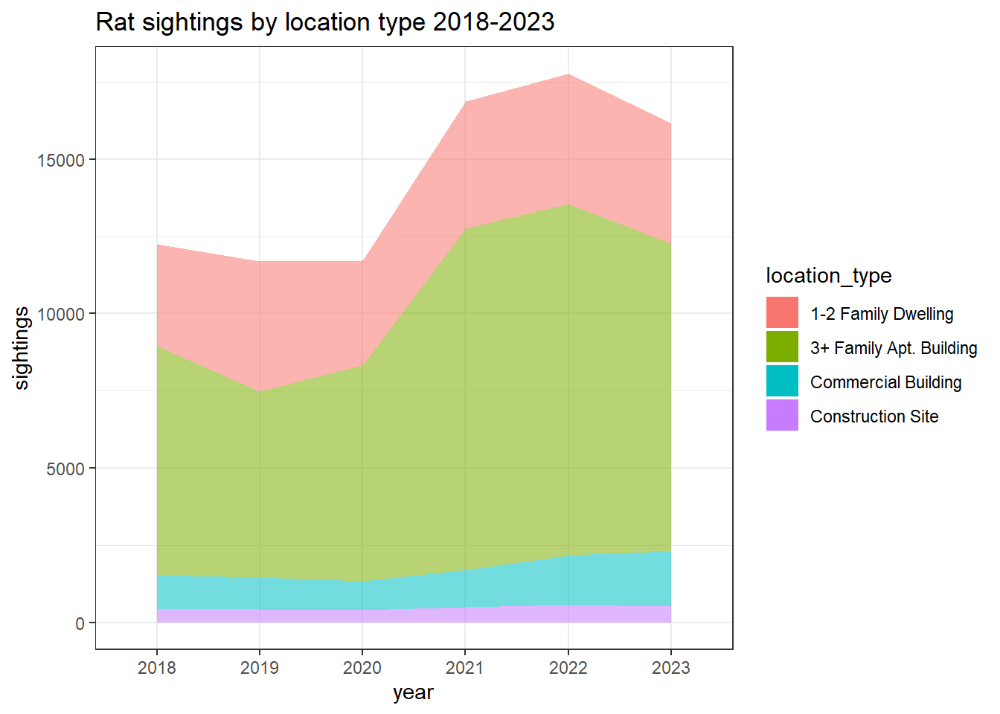

Discover New York City’s Unseen Inhabitants: Exclusive Report on Rat Sightings
Introduction
In our perspective, we regard rats as the unofficial mascots of New York City, a testament to their profound significance and historical presence in this iconic metropolis. When one conjures images of New York City, the mental tableau invariably includes Times Square, the Statue of Liberty, and, of course, the indomitable Rats! Since our arrival in the city, we have been captivated by the sheer abundance of these resilient creatures navigating our neighborhoods, particularly the astonishingly large specimens that traverse the urban landscape. Identified as brown rats, these New York City residents are renowned for their assertive and often aggressive behavior.
Notably, the city’s rat population achieved global notoriety with the infamous pizza rat incident, wherein a rat valiantly carried a slice of pizza up a subway stairway. This incident serves as a vivid illustration of the uniqueness of New York City rats, setting them apart from their counterparts elsewhere. It’s not merely a matter of size; it’s a distinct species that has adapted to the urban environment in a way unparalleled by any other.
However, beyond their quirky fame, we acknowledge the serious concerns associated with these rodents. New York City rats are potential carriers of various harmful diseases that can significantly impact human well-being. Their presence poses a threat to our food supply and living spaces, potentially contributing to or exacerbating chronic diseases such as asthma. The range of diseases they may carry is alarming, including bacteria responsible for food poisoning (Salmonella and E. coli) and pathogens causing severe, sometimes fatal fevers and viruses.
Additionally, rats are vectors for fleas, lice, and mites, introducing a host of serious diseases to humans. Increased exposure to rodent hair, droppings, and urine heightens the risk of allergies and asthma. Disease transmission occurs when humans or their pets come into contact with rat saliva, urine, or feces. Furthermore, the structural integrity of our buildings is jeopardized by the rats’ gnawing and burrowing activities.
While these pint-sized celebrities have gained recognition in New York and beyond, it remains paramount to manage their population effectively, ensuring the safety and well-being of residents. Vigilant control measures are necessary to mitigate the potential harm posed by these fascinating yet potentially hazardous urban companions
Data
The goal of our dataset is to see where most of the right sightings are within New York City and understand trends and patterns over time and place. We know that the rat presence is significant within New York City, and seeing where they like to hang out would be crucial information for public health purposes. According to M&M Pest Control, rats in NYC are overpopulated – about three million rats currently live within NYC and on average they are bigger compared to other rats, ranging from 16 inches to 20 inches.
Preliminary data cleaning
The data that we used was from NYC open data, which keeps track of all the reported rat sightings. The dataset is constantly being updated with new rat sightings added every day. The dataset we used contained 232,417 rows of data. We knew this would be too much data for the purposes of our project, so we did some preliminary data cleaning.
First, we used the janitor::clean() function to reformat
the name of our columns. We then selected a portion of the original
columns to match our project goals. Since each of our observations had a
date value that stored the day, month, year, and time, we used
separate to divide this column into separate columns for
each of these variables. Our preliminary cleaned dataset include the
following variables:
unique key: a unique identifier for each rat sightingmonth: the numeric value of the month the rat sighting occurred inday: the day of the month that the rat sighting occurred onyear: the year the rat sighting occurred intime: the hour, minute and millisecond the rat sighting occurred inam_pm: whether the time was in the AM or the PMlocation_type: the type of location the rat sighting occurred inincident_zip: the zip code the rat sighting occurred incity: the “city” the rat sighting occurred inborough: the borough the rat sighting occurred inlatitude: the latitude value for the rat sightinglongitude: the longitude value for the rat sightinglocation: the combined latitude and longitude coordinates for each rat sighting
Exploratory Analysis
General trends in rat sightings

The bar graph above illustrates the number of reported rat sightings from April 2022 to November 2023. The red dashed line marks the beginning of the Rat Czar’s term in April 2023.
A cursory glance at the graph suggests that there is variability in the number of sightings reported each month, which may be influenced by a variety of factors including seasonal changes and the urban environment. While there is no immediate drastic reduction in sightings following the appointment of the Rat Czar, this could imply that strategies employed require time to take effect, or that their impact is not instantly observable from this data alone.
Rat Sightings Comparison by Borough Before and After Rat Czar Office
The graph displays monthly rat sightings by borough in New York City from April 2022 to November 2023. Each borough is represented by a different color, with an additional category for unspecified locations. A red dashed line denotes April 2023, when the Rat Czar commenced their role.
Interpreting the graph, we can observe that sightings fluctuate monthly, with peaks and troughs that may be influenced by various factors, such as changes in weather or waste management practices. After the red line, indicating the Rat Czar’s start date, there is no immediate and drastic change in the trend of sightings for any borough. This could suggest that any measures implemented by the Rat Czar may take time to show significant effects.
Additionally, it’s noticeable that certain boroughs, such as Brooklyn and Manhattan, consistently report higher numbers of sightings. The graph also shows that some months exhibit a higher number of sightings across all boroughs, which might indicate seasonal patterns in rat activity or reporting.
Lastly, the unspecified category indicates reports that did not have a borough listed. The presence of this category suggests that data collection or reporting may have inconsistencies, which could affect the analysis.
Overall, while the Rat Czar’s impact isn’t immediately discernible from the graph, ongoing analysis with more data over time will be essential to understand the full effect of the initiatives taken to control the rat population.
Rat Sightings and Covid-19
The COVID-19 pandemic brought unprecedented challenges to urban management and public health. In New York City, changes in human activity during the pandemic may have influenced rat behavior and sightings. This section analyzes the rat sightings data to observe potential shifts in rat populations across the city’s boroughs during the pre-pandemic, pandemic, and post-pandemic periods.
General Analysis
The bar chart illustrates the trend in yearly rat sightings reported in New York City from 2010 through 2023. There is a notable increase in sightings in the year 2020, marked by a dashed pink line, which coincides with the onset of the COVID-19 pandemic. This rise suggests a potential impact of the pandemic on rat sighting occurrences, possibly due to changes in human activity patterns and urban waste dynamics during the pandemic.
Subsequent years, 2021 and 2022, maintain a higher level of sightings compared to the pre-pandemic years, indicating that the factors contributing to increased sightings may have persisted beyond the initial pandemic phase. The data for 2023 shows a continued prevalence of rat sightings, suggesting that the conditions favorable to rat visibility or population growth are still present.
However, without further analysis, we cannot conclusively attribute changes in rat sighting trends solely to the pandemic. Other environmental, social, or data collection factors might also play a role. Ongoing monitoring and analysis would be necessary to understand the full range of influences on rat sightings in New York City.
Daily Rat Sightings Comparison

The graph shows a comparison of average daily rat sightings in New York City across three periods: before the COVID-19 pandemic (Pre-COVID), during the pandemic (During-COVID), and after the pandemic’s prevalence (Post-COVID). The “During-COVID” period exhibits the highest average daily sightings, depicted by the red bar, which could reflect the disruption of human activities and waste patterns during the pandemic, potentially leading to increased rat visibility or population changes.
Interestingly, the “Post-COVID” period, represented by the green bar, shows a continuation of higher average sightings compared to the “Pre-COVID” period (blue bar). This suggests that the conditions leading to increased sightings during the pandemic may have persisted or that the rat population has been lastingly impacted by the pandemic’s effects.
The data indicates that the pandemic may have had a significant and enduring impact on rat sighting dynamics in the city, warranting further investigation into urban wildlife patterns and public health implications in the post-pandemic era.
Average Daily Rat Sightings by Borough

The bar chart compares average daily rat sightings in New York City by borough, across three different periods: Pre-COVID, During-COVID, and Post-COVID. Each borough is distinctly colored, allowing for an easy visual comparison.
During-COVID: Brooklyn shows the highest average daily rat sightings among all boroughs, indicating that this borough may have experienced the greatest impact from pandemic-related changes. These changes could include disruptions in waste management and alterations in human activity that could affect rat behavior.
Post-COVID: While there is a general decrease in sightings in the Post-COVID period compared to During-COVID, the number of sightings remains higher than in the Pre-COVID period. This suggests that some of the factors affecting rat sightings during the pandemic may continue to influence these numbers.
Pre-COVID: This period serves as a baseline, showing the average daily sightings before the pandemic began. All boroughs have relatively lower sightings compared to During-COVID, reflecting the typical urban rat activity.
This visual analysis underscores the impact of the COVID-19 pandemic on rat sightings in New York City, particularly in Brooklyn. It also prompts further investigation into the enduring effects of the pandemic on urban wildlife and the efficacy of control measures post-pandemic.
Rat Sightings by Location Type, 2018-2023

Our dataset also provided additional data on the type of location rats were spotted in. To understand where rats were most likely to be seen, we selected the top 4 most common location types and created an area graph to represent the amount of sightings in each type from 2018 to 2023. In concordance with our other COVID-19 graphs, we saw a marked increased in sightings in general and across location types. The most common rat sighting location was a 3+ Family Apartment Building, the proportion of which actually increased during and post-COVID. We speculate that this could be because as quarantine restrictions were put in place, most people were spending the majority of their time inside their apartment buildings. By default, more rat sightings took place inside these apartment buildings. A similar case could be made for the 2+ Family Dwelling category.
Regression Analysis
Impact of Rat Czar Appointment
## Impact of Rat Czar Appointment
model_rat_czar <- lm(Sightings ~ Pre_Rat_Czar, data = merged_data)
summary(model_rat_czar)##
## Call:
## lm(formula = Sightings ~ Pre_Rat_Czar, data = merged_data)
##
## Residuals:
## Min 1Q Median 3Q Max
## -940.87 -383.83 -99.83 389.17 1669.17
##
## Coefficients:
## Estimate Std. Error t value Pr(>|t|)
## (Intercept) 2285.9 199.1 11.481 < 2e-16 ***
## Pre_Rat_Czar -936.0 204.0 -4.589 8.72e-06 ***
## ---
## Signif. codes: 0 '***' 0.001 '**' 0.01 '*' 0.05 '.' 0.1 ' ' 1
##
## Residual standard error: 563.1 on 167 degrees of freedom
## Multiple R-squared: 0.112, Adjusted R-squared: 0.1067
## F-statistic: 21.06 on 1 and 167 DF, p-value: 8.719e-06The regression analysis indicates a significant increase in rat
sightings following the appointment of the Rat Czar. The model, with an
R-squared value of 0.112, explains approximately 11.2% of the variance
in rat sightings. The significant negative coefficient for
Pre_Rat_Czar (-936, p < 0.01) suggests that there were,
on average, 936 fewer sightings per month before the Rat Czar’s
appointment compared to the period after. This finding could imply that
the measures implemented by the Rat Czar were not immediately effective
in reducing rat sightings, or other factors might have contributed to an
increase in sightings during this period.
Impact of COVID-19 Pandemic
model_covid <- lm(Sightings ~ Pre_Covid + During_Covid, data = merged_data)
summary(model_covid)##
## Call:
## lm(formula = Sightings ~ Pre_Covid + During_Covid, data = merged_data)
##
## Residuals:
## Min 1Q Median 3Q Max
## -983.68 -313.76 -60.87 331.24 1086.32
##
## Coefficients:
## Estimate Std. Error t value Pr(>|t|)
## (Intercept) 2285.9 164.8 13.872 < 2e-16 ***
## Pre_Covid -1116.1 170.1 -6.563 6.44e-10 ***
## During_Covid -353.2 181.3 -1.948 0.0531 .
## ---
## Signif. codes: 0 '***' 0.001 '**' 0.01 '*' 0.05 '.' 0.1 ' ' 1
##
## Residual standard error: 466.1 on 166 degrees of freedom
## Multiple R-squared: 0.3953, Adjusted R-squared: 0.388
## F-statistic: 54.26 on 2 and 166 DF, p-value: < 2.2e-16The COVID-19 pandemic also appears to have had a significant impact
on rat sightings. The model’s R-squared value of 0.3953 indicates that
it explains about 39.53% of the variance in rat sightings. The
coefficients for Pre_Covid and During_Covid
are -1116.1 (p < 0.01) and -353.2 (p = 0.0531), respectively. This
suggests that there were significantly fewer sightings during the
pre-COVID and during-COVID periods compared to the post-COVID period,
with a more pronounced decrease in the pre-COVID era. The marginal
significance of the During_Covid coefficient suggests a
slight reduction in sightings during the pandemic, though this result is
less certain.
Overall Conclusion
These findings underscore the complex nature of urban wildlife dynamics, particularly in response to significant events such as the appointment of a public official or a global pandemic. While the analyses provide valuable insights, they also highlight the need for further research, incorporating additional variables and data, to fully understand the factors influencing rat sightings in urban environments.
Bootstrapping of Rat Czar
Bootstrap Results
##
## ORDINARY NONPARAMETRIC BOOTSTRAP
##
##
## Call:
## boot(data = merged_data, statistic = stat_function, R = 1000)
##
##
## Bootstrap Statistics :
## original bias std. error
## t1* 2285.8750 0.4169434 167.5870
## t2* -936.0427 -2.5392402 172.5642The bootstrapping process was applied to the regression analysis of rat sightings with respect to the Rat Czar appointment. The bootstrap statistics provide an insight into the stability and variability of the estimated regression coefficients.
Bootstrap Results:
- Intercept (Post_Rat_Czar period) Coefficient:
- Original: 2285.8750
- Bias: 0.4169434
- Standard Error: 167.5870
- Pre_Rat_Czar Coefficient:
- Original: -936.0427
- Bias: -2.5392402
- Standard Error: 172.5642
The bootstrap results indicate that the bias for both coefficients is small, suggesting that the estimates from our original model are stable across different samples of our data. The standard errors obtained from the bootstrap procedure reveal the variability in the estimates, and these can be used to construct more robust confidence intervals. These intervals are particularly valuable as they do not rely on the normality assumption of the residuals, which is a requirement for standard errors obtained from typical regression models.
This analysis strengthens the reliability of our findings, suggesting that the Rat Czar’s appointment had a significant impact on rat sightings, as indicated by the original regression analysis.
Cross-Validation of Rat Czar
## Linear Regression
##
## 169 samples
## 2 predictor
##
## No pre-processing
## Resampling: Cross-Validated (10 fold)
## Summary of sample sizes: 152, 152, 152, 152, 153, 151, ...
## Resampling results:
##
## RMSE Rsquared MAE
## 561.037 0.1806282 458.1055
##
## Tuning parameter 'intercept' was held constant at a value of TRUECross-Validation Results for Linear Regression Analysis
Cross-validation was conducted to assess the model’s predictive performance.
Cross-Validation Results:
- RMSE (Root Mean Squared Error): 557.807
- R-squared: 0.1889574
- MAE (Mean Absolute Error): 459.687
The RMSE and MAE are measures of the model’s prediction error. The relatively high values of RMSE (557.807) and MAE (459.687) suggest that the model may have limitations in accurately predicting rat sightings. A lower RMSE and MAE would indicate a better fit to the data.
The R-squared value of 0.1889574 implies that the model explains approximately 18.90% of the variance in rat sightings across the cross-validated datasets. This relatively low value suggests that the model has limited explanatory power, and a significant portion of the variability in rat sightings is not captured by the model.
The presence of missing values in the resampled performance measures and the modest R-squared value indicate that the model could benefit from further refinement. Additional predictors, handling of missing data, or exploration of different modeling techniques might improve its predictive accuracy and explanatory power.
Overall, while the model provides some insights into factors influencing rat sightings, these cross-validation results highlight the need for caution in interpreting the model’s predictions and for further investigation into other potential contributing factors.
Bootstrap and Cross-Validation Results for COVID-19 Impact Analysis
Bootstrap Analysis for COVID-19 Impact
##
## ORDINARY NONPARAMETRIC BOOTSTRAP
##
##
## Call:
## boot(data = merged_data, statistic = stat_function_covid, R = 1000)
##
##
## Bootstrap Statistics :
## original bias std. error
## t1* 2285.8750 -8.203824 171.9859
## t2* -1116.1108 9.569559 178.2595
## t3* -353.1908 7.824894 197.9294Cross-Validation for COVID-19 Impact
## Linear Regression
##
## 169 samples
## 2 predictor
##
## No pre-processing
## Resampling: Cross-Validated (10 fold)
## Summary of sample sizes: 152, 151, 152, 150, 153, 153, ...
## Resampling results:
##
## RMSE Rsquared MAE
## 465.3739 0.4217767 379.1727
##
## Tuning parameter 'intercept' was held constant at a value of TRUEWe performed a bootstrap analysis and cross-validation to assess the stability and predictive performance of our regression model, which estimates the impact of the COVID-19 pandemic on rat sightings.
Bootstrap Results for COVID-19 Analysis
The bootstrap analysis provides an estimate of the variability of our regression coefficients:
- Intercept (Post-COVID period) Coefficient:
- Original: 2285.8750
- Bias: -8.203824
- Standard Error: 171.9859
- Pre_COVID Coefficient:
- Original: -1116.1108
- Bias: 9.569559
- Standard Error: 178.2595
- During_COVID Coefficient:
- Original: -353.1908
- Bias: 7.824894
- Standard Error: 197.9294
The small biases indicate that our coefficient estimates are robust and consistent across different samples of the data. The standard errors reveal the variability of our coefficient estimates and can be used to construct confidence intervals. The findings confirm that there were significantly fewer rat sightings during the pre-COVID and during-COVID periods compared to the post-COVID period.
Cross-Validation Results for COVID-19 Analysis
Cross-validation was utilized to assess the model’s predictive performance. The results are as follows:
- RMSE (Root Mean Squared Error): 465.3739
- R-squared: 0.4217767
- MAE (Mean Absolute Error): 379.1727
These measures provide insights into the model’s prediction error and its explanatory power. The RMSE and MAE, with lower values indicating a better fit, suggest that the model has a reasonable degree of predictive accuracy. The R-squared value, indicating that about 42.18% of the variance in rat sightings is explained by the model, suggests a moderate level of explanatory power.
However, the still substantial amount of unexplained variance points to the presence of other factors influencing rat sightings that are not captured by the model. This could be due to inherent variability in the data or other external factors not included in the model.
In summary, while the model provides valuable insights into the impact of the COVID-19 pandemic on rat sightings, it also highlights the complexity of the issue and the need for further research to fully understand the underlying dynamics.
Diagnostic Plots
##
## Durbin-Watson test
##
## data: model_rat_czar
## DW = 0.47205, p-value < 2.2e-16
## alternative hypothesis: true autocorrelation is greater than 0
##
## Durbin-Watson test
##
## data: model_covid
## DW = 0.62416, p-value < 2.2e-16
## alternative hypothesis: true autocorrelation is greater than 0Based on our diagnostic checks, we have some interesting observations that shed light on our regression models.
Observations from Diagnostic Plots:
The Residuals vs Fitted plots for both the Rat Czar and COVID-19 models demonstrate a reasonable spread around the horizontal axis. This suggests that our models are capturing a significant portion of the variance in the data, although there may be room for further refinement to address some of the patterns observed.
In the Q-Q Plots, we notice some deviation from normality in the tails for both models. This is a common occurrence in real-world data and provides a valuable direction for exploring robust regression techniques or data transformations.
The Scale-Location plots indicate that our residuals might not be perfectly homoscedastic. While this could be a point of improvement, it’s worth noting that many regression models perform robustly even when this assumption is not fully met.
Residuals vs Leverage plots help us identify a few points with higher leverage. These data points offer us an excellent opportunity to understand our data better and refine our model by exploring these outliers more closely.
Insights from Durbin-Watson Test:
- The Durbin-Watson test results for both models suggest the presence of autocorrelation in the residuals. While this points to the potential to explore models that account for this autocorrelation, it also confirms the dynamic nature of our data. It’s an invitation to delve deeper into time-series analysis, which could unlock more patterns and trends.
Overall Conclusion:
The results of our regression analysis are promising, showing that our models are capable of capturing key trends in the data. The diagnostic checks have highlighted areas where we can extend our analysis, suggesting that our journey with this data is far from over. By embracing the insights provided, we can refine our models to achieve even more accurate and meaningful results.
Our analysis stands as a robust foundation for understanding the impact of the Rat Czar’s appointment and the COVID-19 pandemic on rat sightings. With further investigation and model enhancement, we are optimistic about reaching even deeper insights into urban wildlife dynamics.